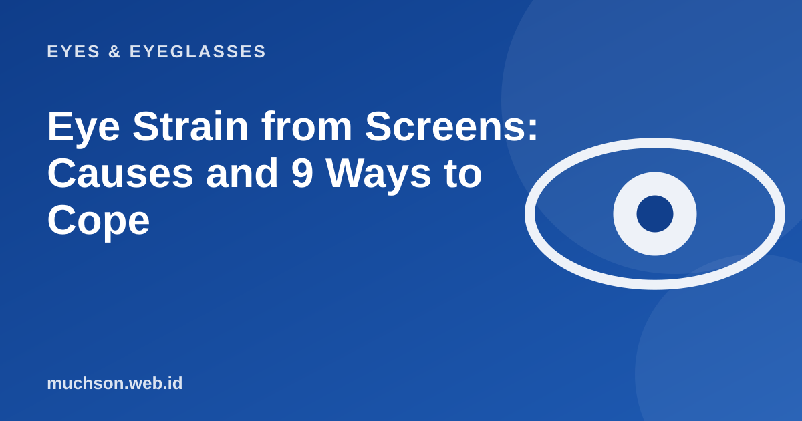

Home › Articles › Eyes & Eyeglasses
Eyes & EyeglassesEye Strain from Screens: Causes and 9 Ways to Cope
Work, study and entertainment all go through screens now, so tired-eye complaints are very common. The good news is that most of the causes are habits you can change today, without buying anything.

What actually happens to the eyes?
Staring at a screen makes the eyes work hard in three ways at once. First, the focusing muscle stays tense because the viewing distance is near and fixed. Second, we blink far less, so the eye surface dries out. Third, glare, reflections and uncomfortable screen contrast force the eyes to keep adjusting. Together this is called digital eye strain or computer vision syndrome.
Text description of the diagram
- Staring at a screen for long
- Blinking rarely
- Dry, sore eyes
- Forced focus, tense eyes
- Headache, blur
then back to the first step.
Common symptoms
- Sore, burning or gritty eyes.
- Temporary blurred vision.
- A mild headache around the forehead or temples.
- A stiff neck and shoulders.
- Difficulty refocusing from the screen to a faraway object.
Nine sensible ways
- The 20-20-20 rule. Every 20 minutes, look at something about 6 metres away for 20 seconds.
- Blink fully. Blink deliberately a few times, especially when focusing.
- Screen distance. About an arm's length from your eyes, with the top of the screen level with or slightly below your eyes.
- Room light. Avoid a dark room with a bright screen; avoid window glare behind the screen.
- Brightness and text size. Match it to the room light, enlarge the text so you do not squint.
- Dark/light mode. Choose whichever is most comfortable; neither is absolutely better.
- Artificial tears. If your eyes are dry, use them as advised by a doctor or pharmacist.
- Check your prescription. Uncorrected minus, plus or cylinder makes the complaints worse.
- Rest your body. Stand up, stretch your neck and shoulders every hour.
How good are your screen habits?
If complaints do not improve after fixing your habits, or severe pain, persistent red eyes or sudden changes in vision appear, see an eye doctor. Do not delay.